2.チュートリアル動画を見る/幻境を作ってみる
上記の動画は、星々の幻境のチャンネルが出してるチュートリアル動画です。
日本語版のチュートリアル動画が公開されています。
クリエイターレベル2に上げるにはクイズをクリアしないといけないので、少し勉強しておくといいかもしれません。
⭐チュートリアル動画の幻境ステージを作ってみる
チュートリアル動画を見ながら幻境ステージを作ってみましょう。
この記事では動画とは異なる手順で幻境ステージを作成していますが、できあがるものは同じです。
赤字部分はクリエイターLv2に上がるためのテストに関連する内容なのでチェックしてください。
チュートリアル動画の内容が英語＋なかなかに早口で進んでいくため、圧倒されてしまいますが、幻境ステージの内容としてはとてもシンプルです。
「コインを5枚獲得したら、ゲームを完了させる」
これだけです。とても簡単ですね。
しかし、この簡単な流れでさえ、初めて星々の幻境でステージ制作を行おうとしている人が一人でやろうとするととても大変です。
この幻境ステージを作る上でやらなければならないことを書き出してみます。
まず、5枚のコインが必要です。
そしてキャラクターが触れたコインは消えているため、「キャラクターが触れたコインを消す」ことが必要です。
他にもキャラクターがコインを獲得するたびに進捗バーが20％ずつ増えているため、この処理も必要です。
最後に5枚のコインを獲得したとき、ゲームを完了させる必要があります。
・コインを5枚用意する
・キャラクターが触れたコインを消す
・キャラクターがコインに触れたとき、進捗バーの数値を20％増やす
・コインを5枚獲得したとき、ゲームを完了させる
以上の内容を頭に入れて、幻境ステージを作っていきましょう。
🌸1.プロジェクトを作成する
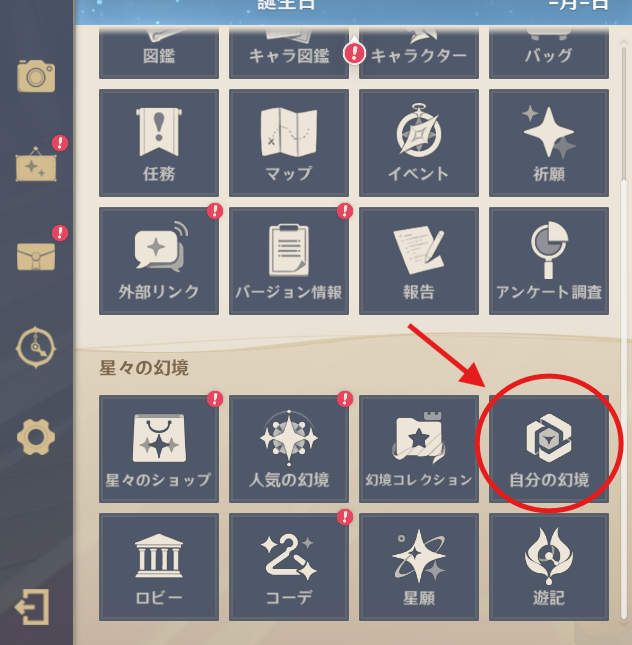
まずパイモンメニューを開いて、「自分の幻境」をクリックします。
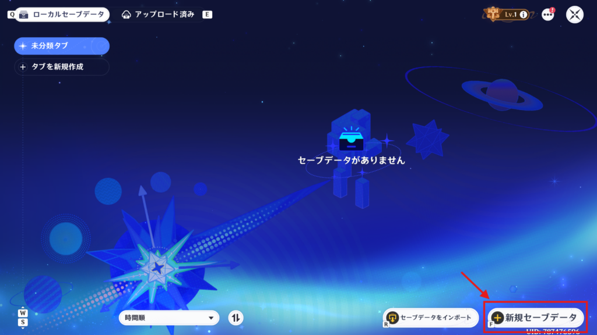
新規セーブデータをクリックします。
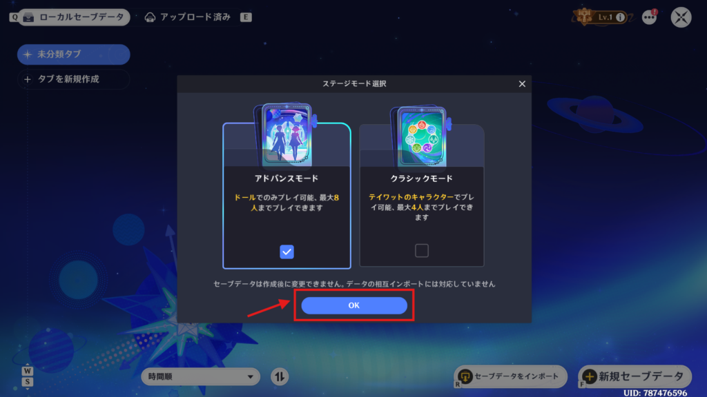
ステージモード選択をどうするかを聞かれます。
アドバンスモードは、ドール専用のモードで最大8人までプレイ可能な幻境ステージを制作できます。
クラシックモードは、テイワットキャラクターでプレイ可能な幻境ステージを制作できます。
プレイ人数は最大4人までとなり、他にも制作する上でアドバンスモードに比べて制限事項が多くあります。
今回はアドバンスモードで制作するので、このままOKをクリックします。
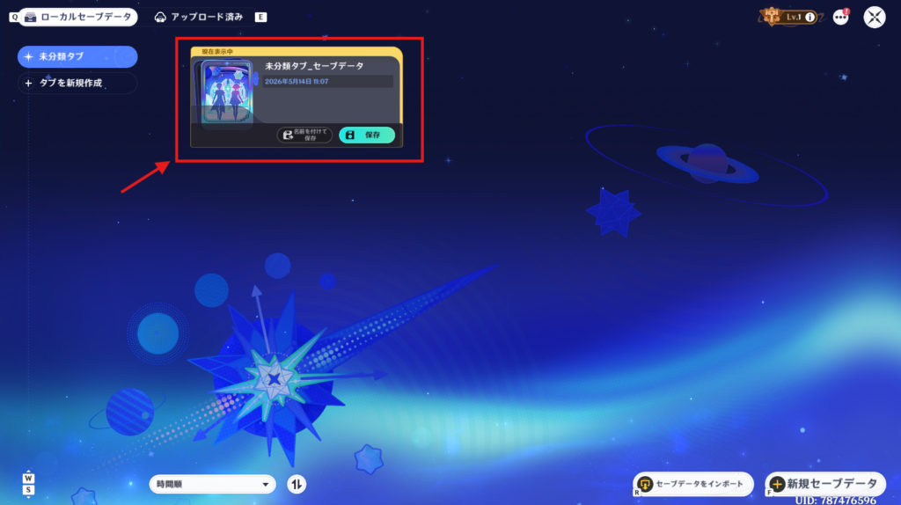
セーブデータを作成するとそのまま制作画面に入ってしまいますが、先ほどの画面を見ると作成したセーブデータが表示されています。
このローカルセーブデータはmiHoYoのサーバーにあるわけではなく、皆さんのPCの中にあるデータを参照しています。
なのでPCを新しくした時や普段とは別のPCで作業する時などはデータを移行しないとこちらのデータは表示されませんので注意してください。
データは以下の場所に保存されています。
C:\Users\ユーザ名\AppData\LocalLow\miHoYo\Genshin Impact\BeyondLocal
それではゲーム画面に戻りましょう。
といっても、すでにプロジェクトは作成されています。
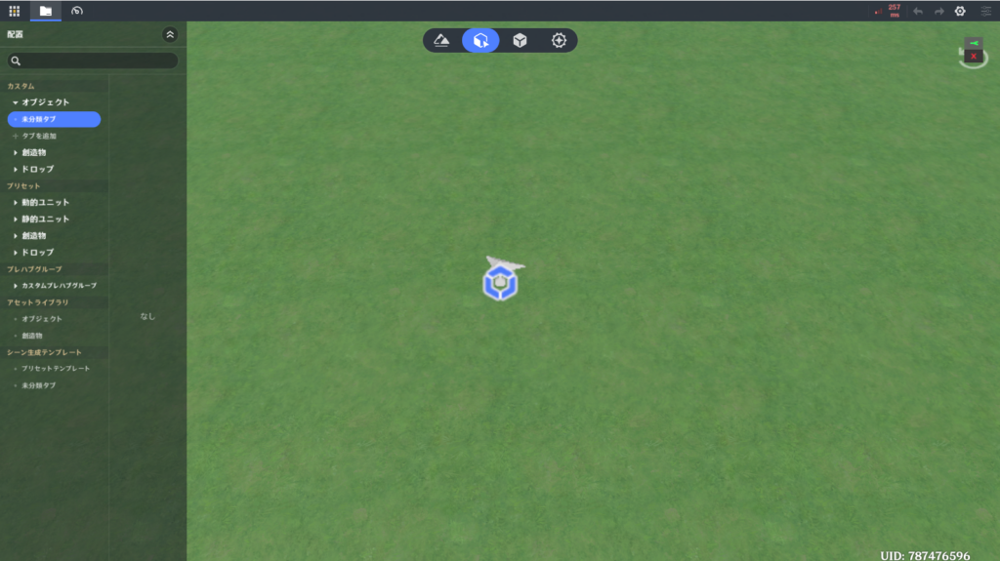
この芝生の画面と
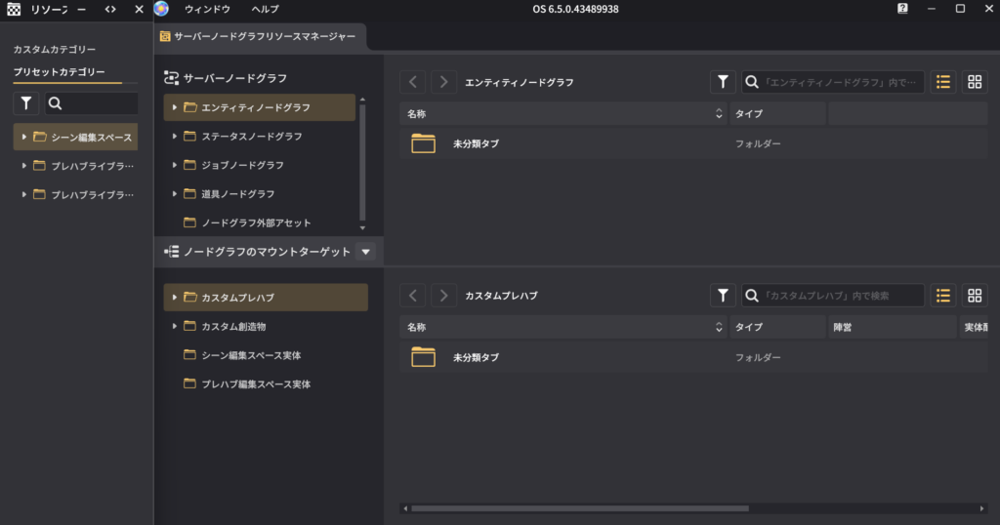
黒い難しそうな画面が開いていれば問題ありません。
この黒の画面が開いていない場合は、
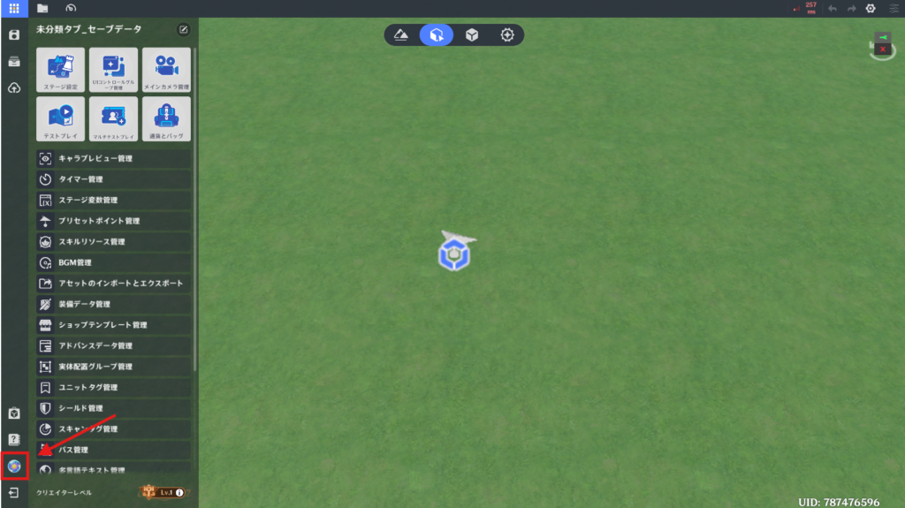
芝生の画面で、まず左上の四角が9個並んでいるボタンをクリックしてメニューを開きます。
その後、左下の青い丸のボタンをクリックすることで黒い画面が立ち上がります。
間違えて黒い画面を×ボタンで閉じてしまった場合もこの方法で再度開くことができます。
🌸コインを作成する
それは「エンティティ」という単語です。
インターネットで「エンティティ」と調べると、「実体」や「存在」といった意味がでてきます。
それじゃあ「実体」って何なの？ってなりますが、それは私も上手に説明できません。
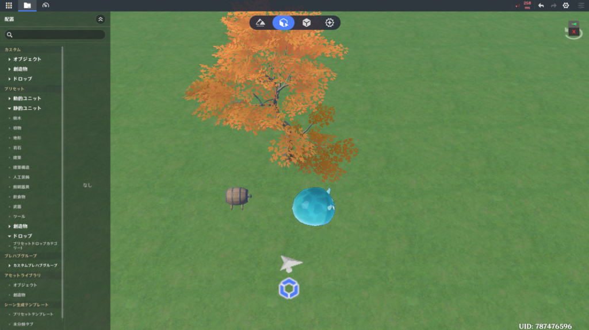
芝生の画面にオレンジ色の木、タル、水スライム、白い矢印、青い図形みたいなものが表示されています。
これらはすべてエンティティです。
他にもキャラクターやキャラクターを操作しているプレイヤー、これもエンティティです。
例えば水スライムが2匹いるとしたら、それらは別のエンティティになります。
同じ種類とか関係なく、個別の存在をエンティティと呼んでいる感じです。
とても抽象的で難しいですね。
さて、エンティティの話はここまでにして、コインの作成に入っていきましょう。
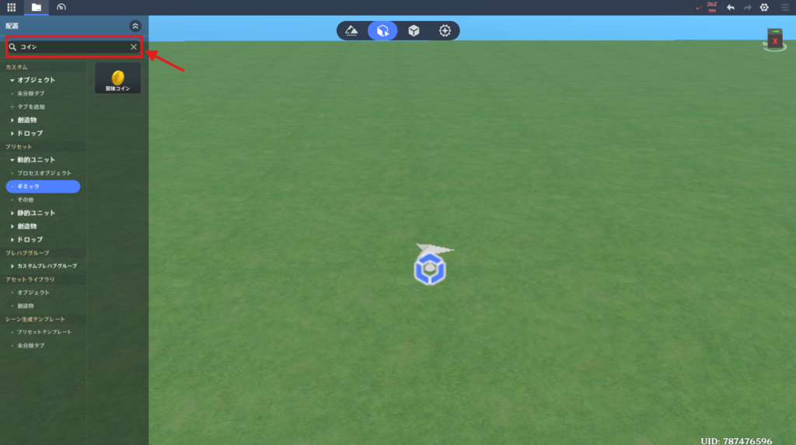
原神のゲーム内で開かれている画面には大きく分けて4つの画面があります。
それぞれ「地形編集」「エンティティの配置」「プレハブライブラリ」「戦闘プリセット」と呼ばれており、画面中央の上部にあるタブで切り替えることができます。
今回は左から2つ目のタブの画面を表示します。これが「エンティティの配置」画面です。
外観やデータなど、この画面に表示されている情報を実際にゲームを遊ぶプレイヤーは受け取ることになります。
なので、この画面にコインを配置します。
左上の検索欄に「コイン」と入力します。
そして動的ユニットの中の「ギミック」を選択します。
抽出された「冒険コイン」をクリックして、画面に表示させます。
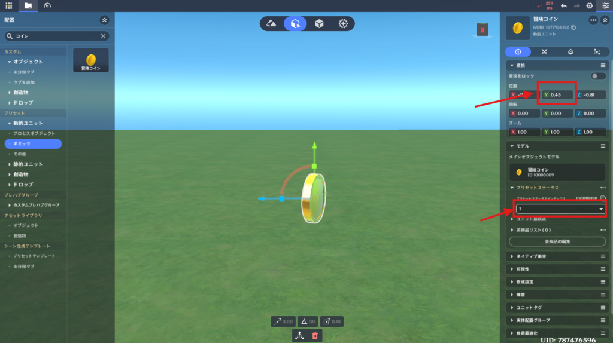
コインが半分埋まっていると思いますので、右の「変換」というところから「位置」のy軸を0.45にします。
これはこのコインの中心を地面から0.45上にずらしています。
そして、「モデル」を開いて「プリセットステータス」を1に変更します。
止まっていたコインがクルクルと回ります。
右のコインの情報が表示されていない場合は、コインをクリックすることで表示されます。
それでも表示されない場合は、右上の三本線の「詳細」ボタンがオンになっているかを確認してください。
それでは実際のステージで確認してみましょう。
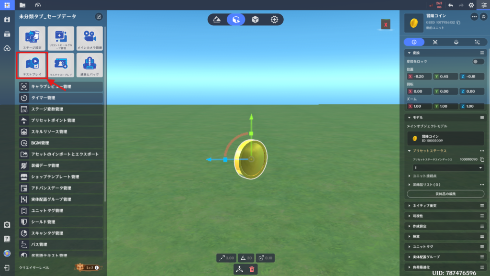
左上の四角が9個集まってるボタンををクリックします。
メニューから「テストプレイ」を選択します。
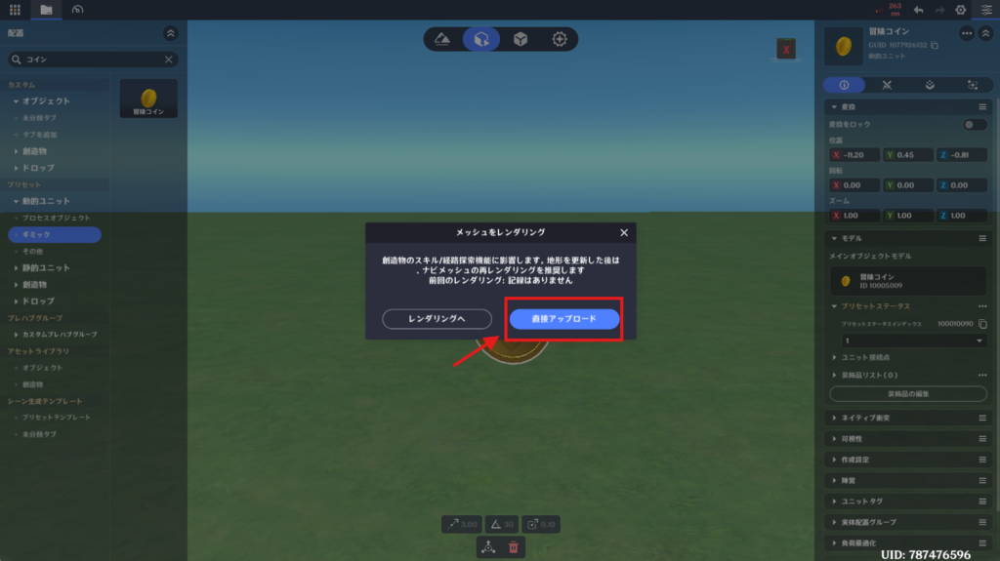
レンダリングをするかどうか聞かれます。
レンダリングとは、地形を正確に表示するための計算のようなもので、地形（この画面でいう芝生の部分）を編集した時には行ったほうがいいですが、今回はその部分は編集していませんので、このまま「直接アップロード」を選択します。
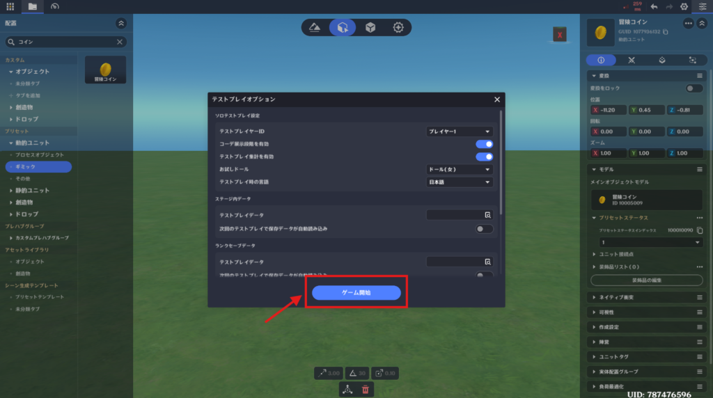
テストプレイオプションは何も変更せず、「ゲーム開始」をクリックします。
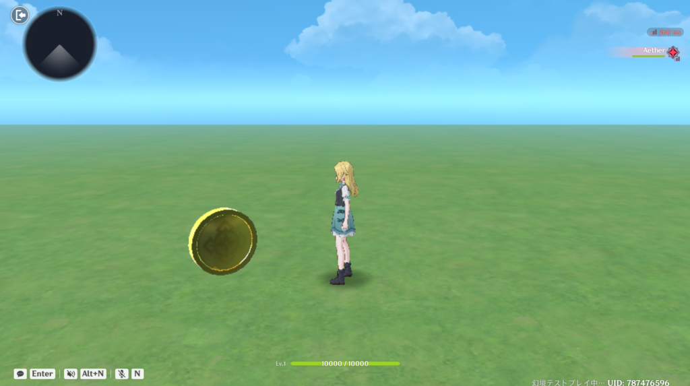
先ほど配置したコインが表示されていたらOKです。
現状、コインには当たり判定がついていますので、コインの上に乗り上げるようになります。
この部分についてはこの後修正します。
テストプレイ画面からはEscキーを押して、挑戦を中断することで幻境制作画面に戻ってくることができます。
それではコインの当たり判定を修正します。
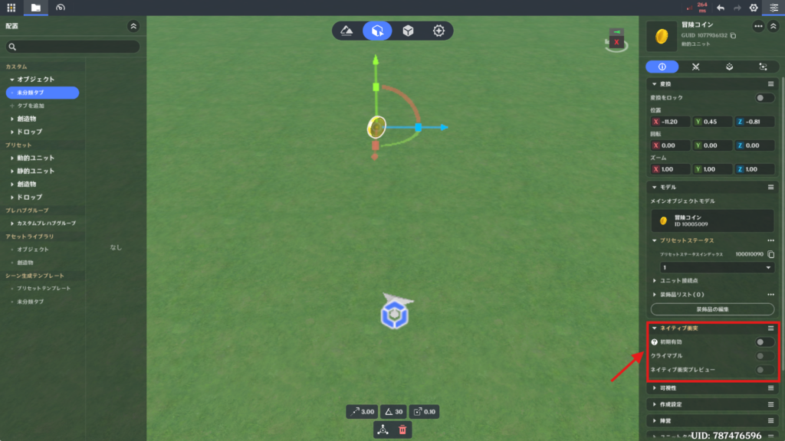
コインを選択して、コインの情報を表示します。
そして「ネイティブ衝突」を開き、「初期有効」をオフにします。
これでコインを通り抜けるようになります。
「ネイティブ衝突」はそのエンティティに対してぶつかるかどうかの設定です。
そしてその下の「クライマブル」は何かというと、そのエンティティを登れるかどうかの設定になります。
「初期有効」をオンにして、「クライマブル」をオフにすることで、ぶつかって登れない壁が作成できます。
今回のコインにはそのような設定は必要ないので、オフにしておきます。
気になる方は先ほどの方法で再度テストプレイしてみてくださいね。
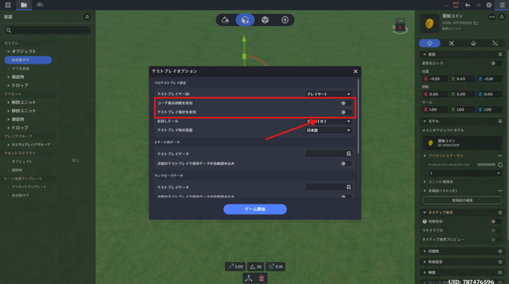
テストプレイ時の小技ですが、テストプレイオプションで、「コーデ展示段階を有効」をオフにするとゲーム開始前のコーデ演出をスキップすることができます。
また、「テストプレイ集計を有効」をオフにすると、ゲーム終了時の結果演出をスキップすることができます。
演出が煩わしい場合は、こちらをオフにしておくといいかもしれません。
🌸キャラクターが触れたコインを消す
星々の幻境では、ビジュアル的な設定を行うエディタ（ゲーム内で表示されている画面）と処理の中身を書いていくエディタ（黒い画面）の2つに分かれています。
なんとなく多くの人が想像するプログラミング（小難しい英数字の羅列のような）は後者の黒い画面にあたります。
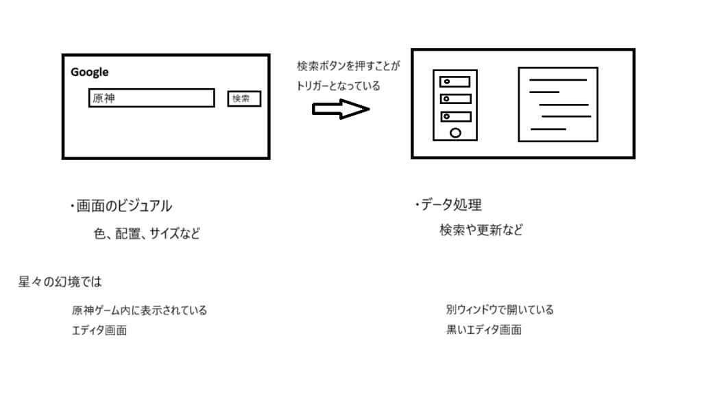
検索画面をイメージするといいかもしれません。
例えば、インターネットで原神について調べようと思ったら、Google等のサイトの検索欄に「原神」と入力して検索ボタンを押しますよね。
Googleの検索画面のビジュアル情報（例えば、検索エリアやボタンをどこに配置するか、見た目はどうするかなど）を原神ゲーム内側のエディタで設定します。
一方で検索ボタンを押した後の処理（検索ボタンが押されましたよという信号をキャッチして、大量のデータの海から原神にヒットした情報を探し出してくる処理）は、黒い画面のほうで作ります。
そのため今回作りたい「キャラクターが触れたときに消える」という処理は黒い画面のほうで作っていくことになります。
それでは、作っていきましょうといきたいところですが、実はまだ原神側の画面で設定しなければならないことがあります。
検索画面でいう「検索」のようにトリガーとなるものの設定をする必要があります。
今回であれば「コインに接触する」ということがそのトリガーにあたります。
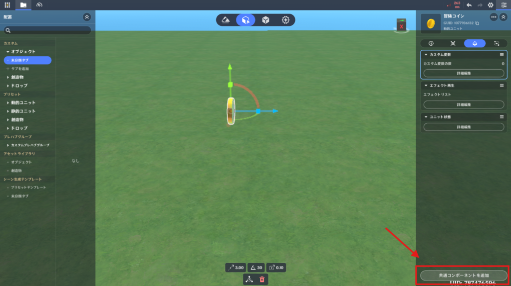
コインを選択してコインの情報を表示します。
エンティティには大きく分けて4つの設定を追加することができます。
それぞれ「基本情報」「専門的な設定」「共通コンポーネント」「ノードグラフ」と呼ばれており、情報画面の上部にあるタブで切り替えることができます。
今回は左から3つ目のタブの画面を表示します。これが「共通コンポーネント」が画面です。
コンポーネントとは、エンティティに「機能」や「見た目」を与える部品のことです。
今回設定する当たり判定以外にもエフェクトの設定やモーションの設定など多くの部品を追加することができます。
何もない状態から当たり判定を感知したりすることを一からやろうとすると非常に難しいのですが、この難しいプログラムを簡単に実現できるようにmiHoYoがプリセットとして提供してくれているわけです。
それでは続きをしていきましょう。
共通コンポーネントボタンをクリックします。
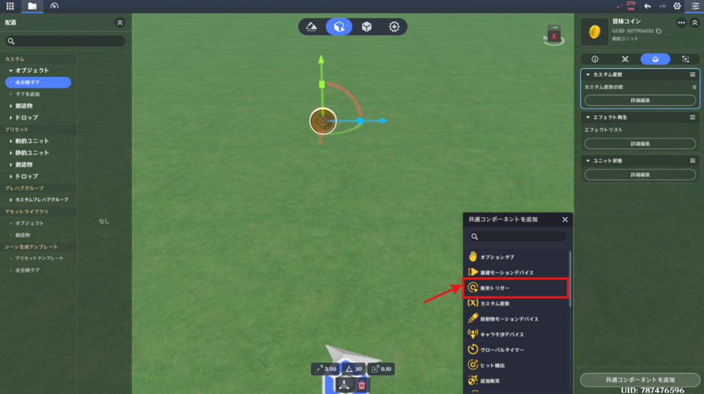
「衝突トリガー」を選択します。
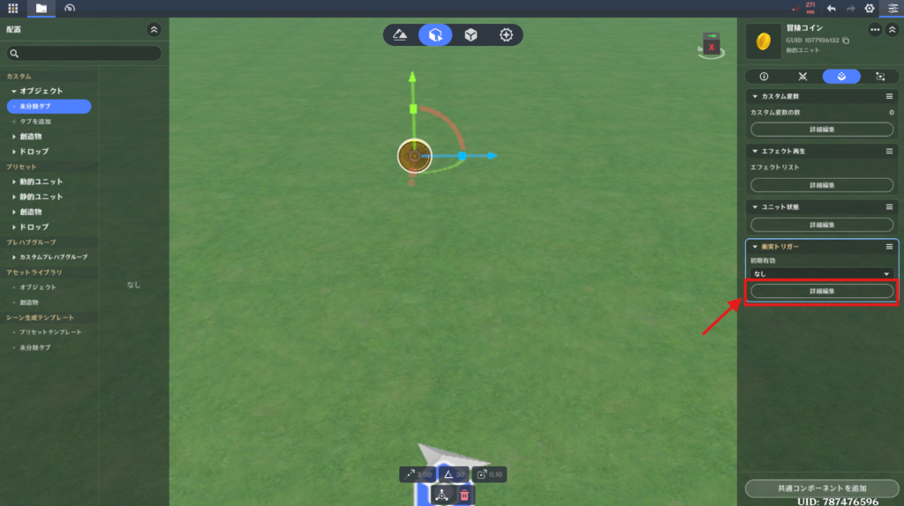
詳細編集をクリックします。
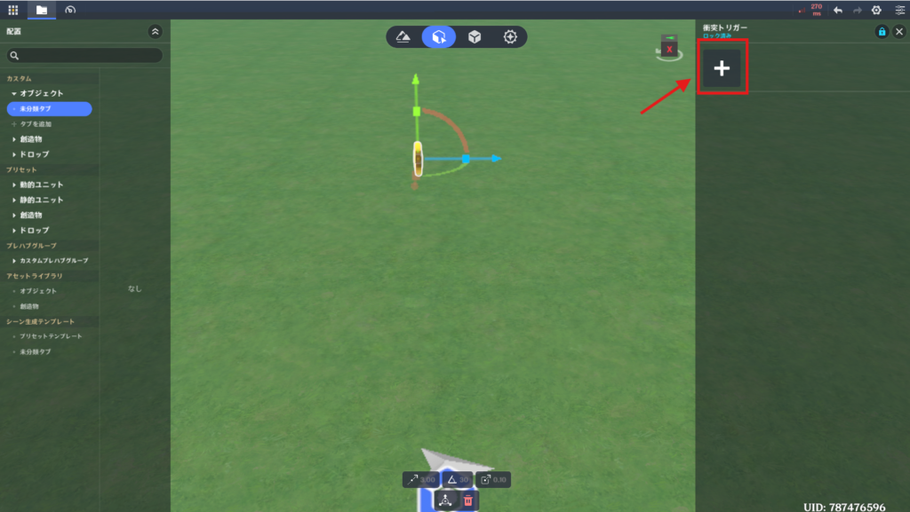
＋ボタンを押して、新規の衝突トリガーを追加します。
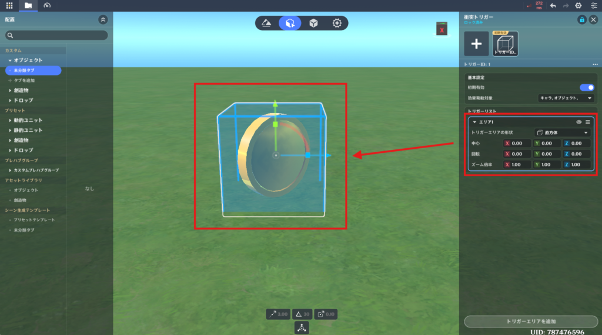
コインが水色の立方体で囲まれました。
この水色の立方体は、トリガーリストのエリア1とリンクしています。
「トリガーエリアの形状」を変更すれば球体やカプセルの形になりますし、ズーム倍率を上げることで水色の枠は変化します。
「衝突トリガー」は同じく共通コンポーネントである「衝突トリガーソース」とセットで起動します。
「衝突トリガーソース」の方も同じように水色の枠を設定することができます。
それぞれ設定した水色の枠が接触したとき、エンティティAがエンティティBに接触しましたよという信号を黒いエディタ画面に対して送ります。
(衝突トリガーソースを持っているエンティティがA、衝突トリガーを持っているエンティティがBです。)
黒いエディタ画面はその送られてきた信号をキャッチして後続の処理を行っていく形になっています。
少し設定を変更します。
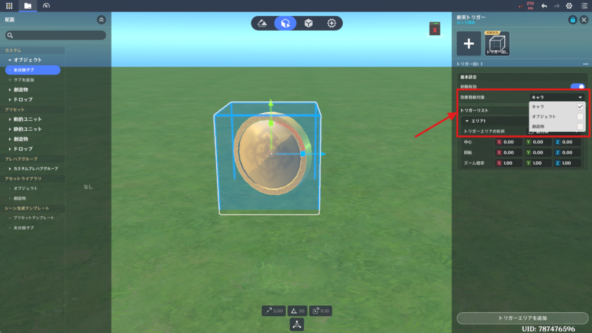
効果発動対象のチェックをキャラのみにします。
キャラは、その名の通りプレイヤーが操作しているキャラクターのことです。
創造物は、わかりにくいですがヒルチャールやスライムなどのモンスターのことです。
オブジェクトはキャラ、創造物以外のエンティティと思ってもらえたら問題ありません。
今回の幻境ステージではすべてにチェックがついていたとしても影響ありませんが、誤作動の原因になることもあるので、意識付けのためにも不要なものは消しておきましょう。
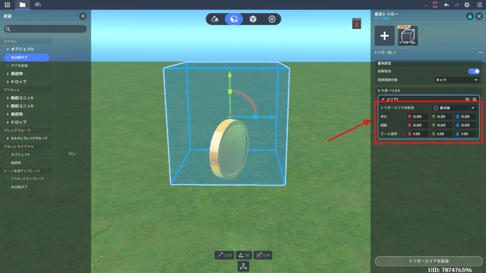
水色の枠を少し調整します。
中心のy軸を0.5上にあげます。そしてズーム倍率をすべて1.5にしておきます。
衝突トリガーが当たる範囲が少し広くなりました。
そして本来であれば次に「衝突トリガーソース」の追加をする必要があるのですが、一部のエンティティにはデフォルトで設定されています。
キャラクターもデフォルトで「衝突トリガーソース」が設定されていますので、今回新たに追加する必要はありません。
原神ゲーム内エディタでの作業はこれで一旦終わりです。
黒いエディタ画面の方に移ります。
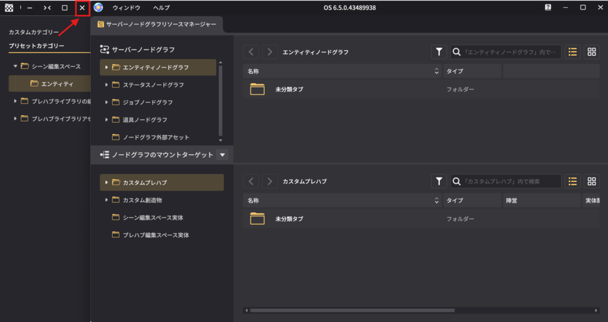
2つ画面が立ち上がっていると思います。小さい画面の方は、「リソースマネージャー」画面といって原神ゲーム内エディタで追加したエンティティの情報が見れるものなので、今回は×ボタンで閉じてしまって大丈夫です。
再度見たくなったら、ウィンドウから「リソースマネージャー」をクリックすることで立ち上がります。
それでは衝突した後の処理を作っていきましょう。
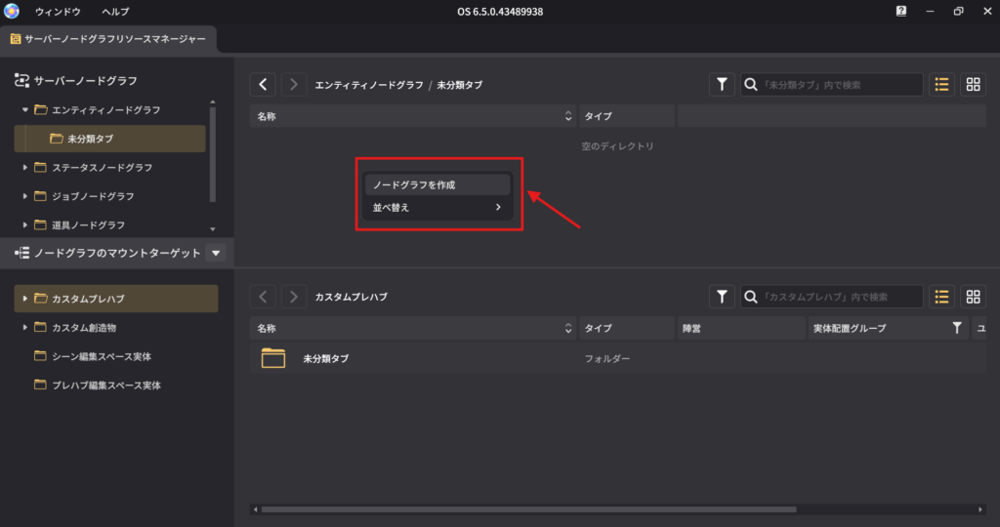
「エンティティノードグラフ」フォルダ内の「未分類タブ」フォルダの中に階層を移動します。
そこで、左クリックをして「ノードグラフを作成」をクリックします。
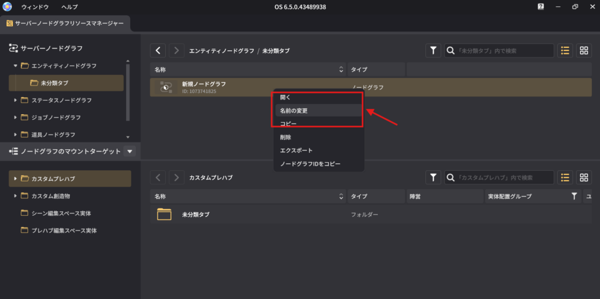
何のノードグラフかわかるように、先ほど作成した新規ノードグラフを左クリックして、名前の変更をしておきましょう。
「コインに触れたらコインを消す」としておきます。
名前を変更したら、ダブルクリックをして中に入ってみましょう。
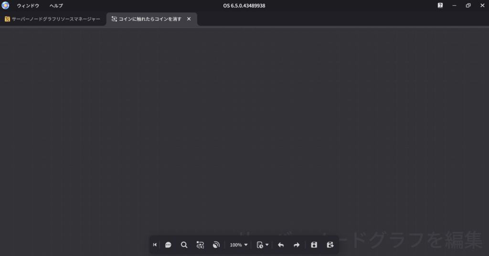
上のタブを見てもらえたら、「コインに触れたらコインを消す」が開いているのがわかると思います。
これがこのノードグラフの編集画面になります。
ここで右クリックをしてみてください。
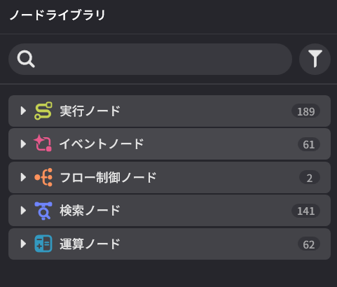
「ノードライブラリ」と名のついた子画面が出てくると思います。
ここで用意されているノードを組み合わせて、線をつないでいくことで、コードを書いていくプログラミングよりも直感的にプログラムを作っていくことができます。
この機能を持ったブロックのことを「ノード」と呼び、ノードを組み合わせて作ったプログラムを「ノードグラフ」と呼んでいます。
各ノードの説明については、メニューの「ノード一覧」から確認してください。
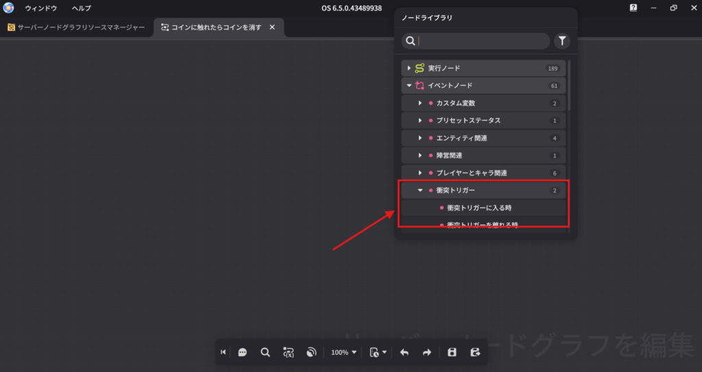
まずノードグラフが起動するための条件を付ける必要があります。
今回でいうと、「コインに触れたら」の部分ですね。
この起動条件を付けていないと、このノードグラフは動かないので注意してください。
起動条件を設定するノードは、ピンク色で括られている「イベントノード」にあたります。
階層を広げていくと、「衝突トリガー」の中に「衝突トリガーに入る時」というイベントノードがあります。
今回はこれを使用します。
衝突トリガーは先ほど設定した水色の立方体のことですね。
クリックしてノードグラフに配置してみましょう。
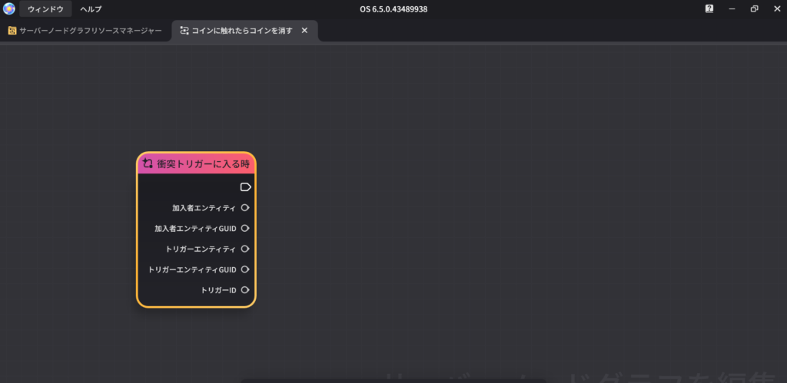
ノードを確認すると、一番上にある矢印と文字とセットになっている右に尖った丸があると思います。
一般的に矢印の方を「実行ピン」、丸の方を「データピン」と呼びます。
他のノードの「実行ピン」「データピン」と線を引っ張ってつなぐことができます。
「実行ピン」で繋がれた通りにプログラムは動いていき、「データピン」はデータの受け渡しをしています。
イベントノードが実行された時、どういう状態でイベントが動いたのか情報を一緒に教えてくれます。
「加入者エンティティ」→衝突トリガーに入ったエンティティのことです。衝突トリガーソースを持ってる側のことですね。
エンティティの番号は、そのエンティティがゲーム内で作られたときに一意になるように採番されるので、ノードグラフを編集する時点では特定することができません。
「加入者エンティティGUID」→加入者エンティティのGUID。GUIDもエンティティと同じくそのエンティティを一意に表す番号のことです。
ただし、GUIDはエンティティの番号とは異なり、幻境を編集している時点で既に決められています。
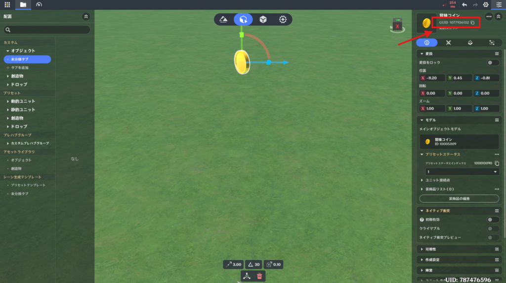
エンティティ配置画面のエンティティを選択し、右上を見るとGUIDが採番されています。
一方でエンティティ配置画面には編集時点では生成せずに、ゲーム内で初めて生成されたエンティティについてはこの番号を持ちません。
トリガーエンティティは衝突トリガーを持っているエンティティのことですね。
エンティティとGUIDの違いについては加入者と同じです。
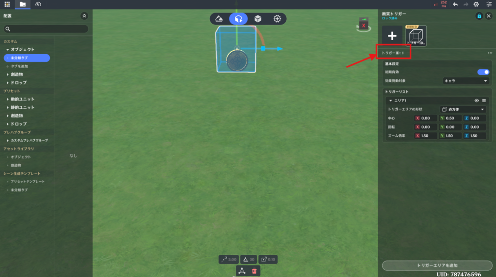
トリガーIDは、1つのエンティティに対して複数の衝突トリガーを設定することができるので、衝突トリガーを特定するための番号になります。
先ほど作成した衝突トリガーのIDは1になっていますね。
これで「コインに触れたら」の部分はできましたので、続いて「コインを消す」の部分を作っていきましょう。
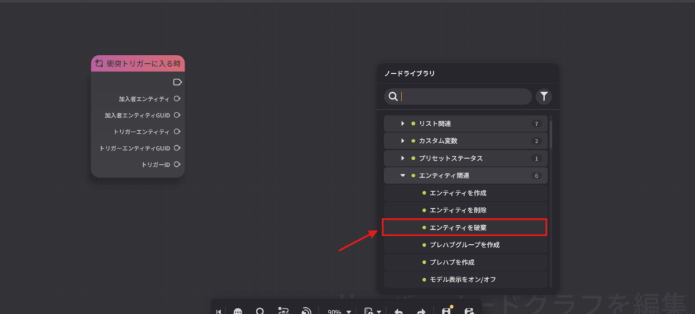
右クリックでノードライブラリを開き、「実行ノード」を開いて、「エンティティ関連」を開きます。
「エンティティを削除」と「エンティティを破棄」という似たようなノードが存在します。
どちらもエンティティを消すことはできますが、「エンティティを破棄」は「エンティティを削除」の上位互換のような機能です。
「イベントノード」にエンティティを破棄した時やエンティティを削除した時に起動されるノードがあります。
このイベントノードを使うときは、受け取り手が困らないように使い分けをした方がいいですが、そうでないときはどちらを使っても問題ありません。
今回はチュートリアル動画が「エンティティを破棄」の方を使っているので、そちらに合わせておきます。
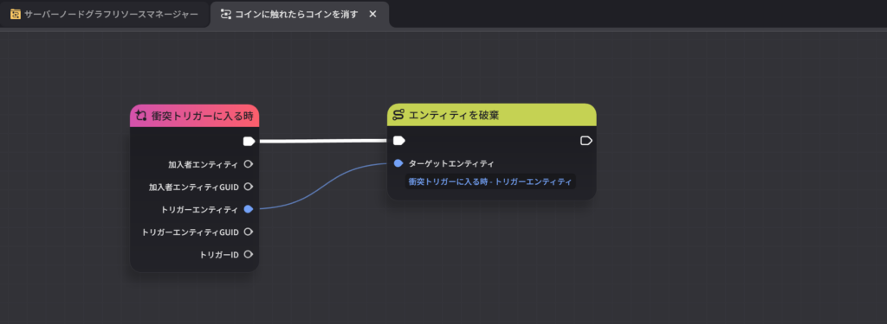
そしてこの2つのノードを繋げます。
「エンティティを破棄」の破棄する対象はコインなので、「トリガーエンティティ」と繋げます。
これでコインに触れたらコインを消すノードグラフが完成しました。
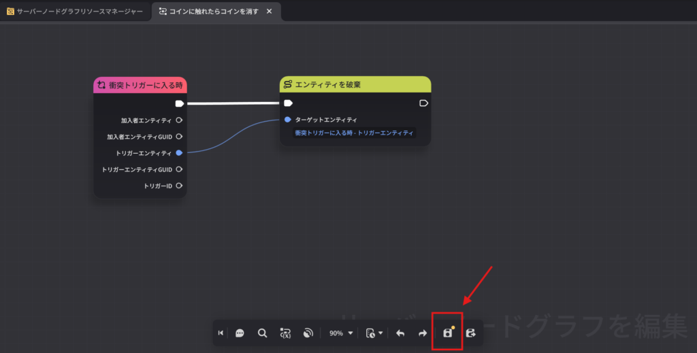
オレンジマークがついているときは、保存していない状態なので忘れずにこのボタンを押して保存するようにしてください。
そしてもう一つ大事なことがあります。
この黒いエディタ画面で作成したノードグラフは、原神ゲーム内エディタのエンティティに紐づけしないと使えないということです。
ノードグラフを作って満足して、紐づけを忘れないようにしましょうね。
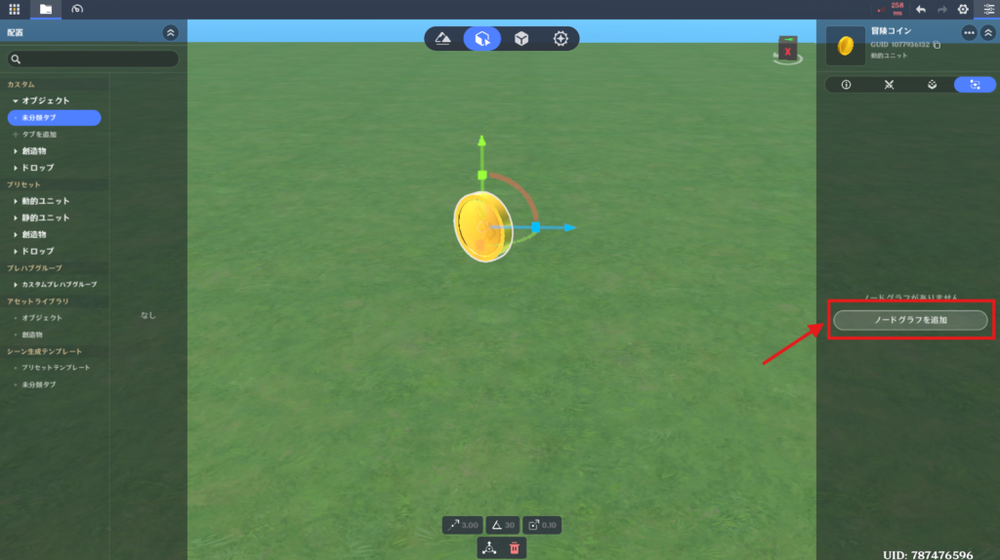
コインの詳細画面の一番右の「ノードグラフ」タブをクリックします。
「ノードグラフを追加」をクリックします。
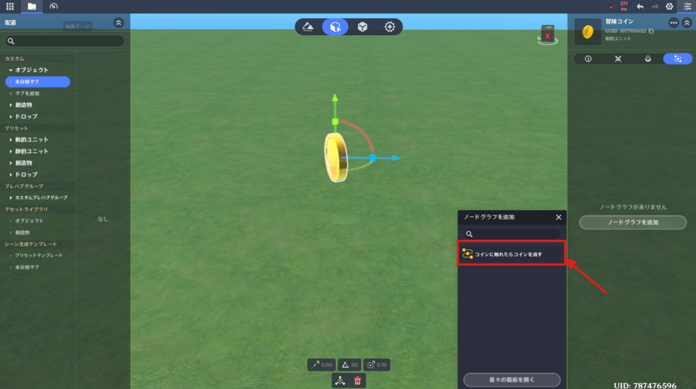
先ほど作成した、「コインに触れたらコインを消す」のノードグラフをクリックして紐づけます。
ここまで出来たらテストプレイをして確認をしましょう。
コインに触れることでコインが消えるはずです。
🌸キャラクターがコインに触れたとき、進捗バーを進める
ここでは、コインに触れたときに進捗バーを進める処理を作っていきます。
まずは画面に進捗バーを表示させるとこからです。
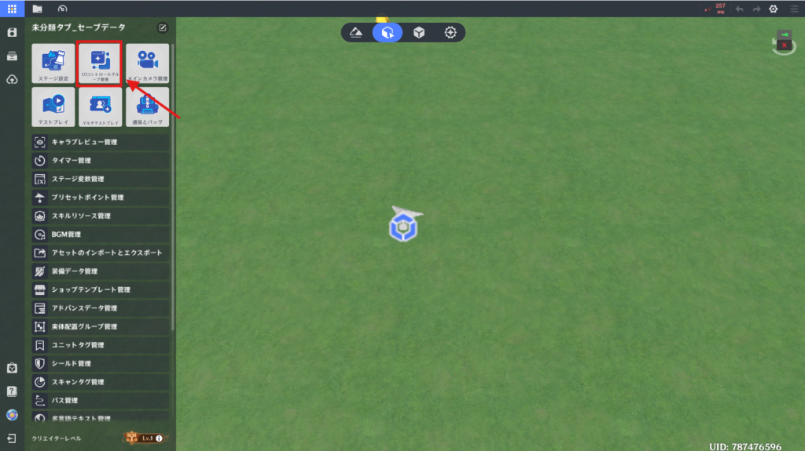
左上の四角が9個まとまっているボタンを押して、メニューを開きます。
「UIコントロールグループ管理」というボタンをクリックします。
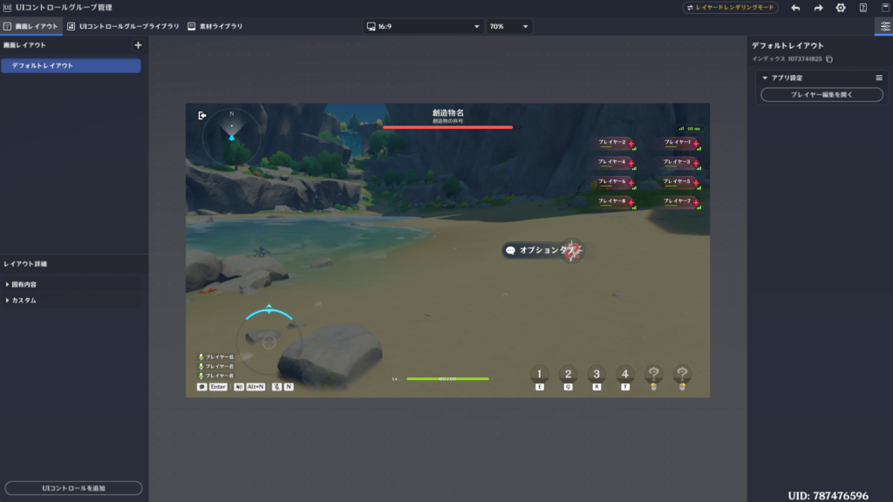
UIが編集ができる画面が開きました。
中央の画面が小さいときは、マウスホイールを回すか、上部にあるパーセントをあげて拡大してください。
現在、「画面レイアウト」の「デフォルトレイアウト」が開いています。
「画面レイアウト」は、実際にプレイヤーの見ている画面の表示と同じものになります。
複数の画面レイアウトを作成することができ、どのレイアウトをどのプレイヤーに割り当てるかは切り替えることができます。
今回のチュートリアルでは、複数のレイアウトは必要ありませんので、このデフォルトレイアウトを使用します。
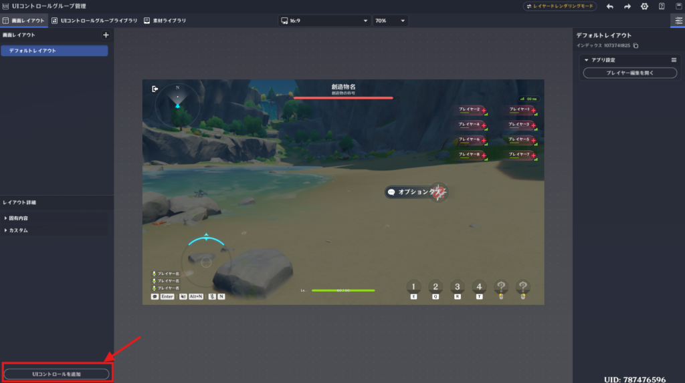
左下にある「UIコントロールを追加」をクリックします。
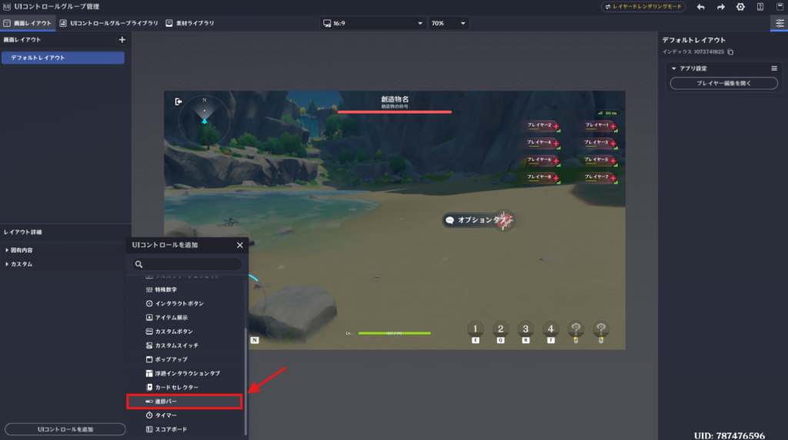
開いた子画面のスクロールを下に下げると、「進捗バー」という項目があるので、これをクリックします。
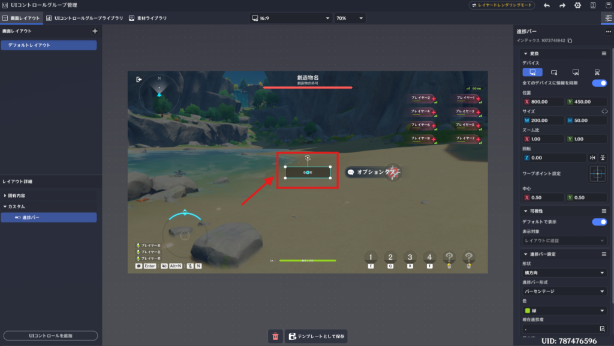
画面の中央に追加されましたね。
新規に追加した項目は、右にあるレイアウト詳細の「カスタム」の中に表示されます。
中央にあるとちょっと邪魔なので、マウスでドラッグするか右の詳細画面の「変換」の中にある「位置」の数字を変更して、少し上に動かしておきましょう。
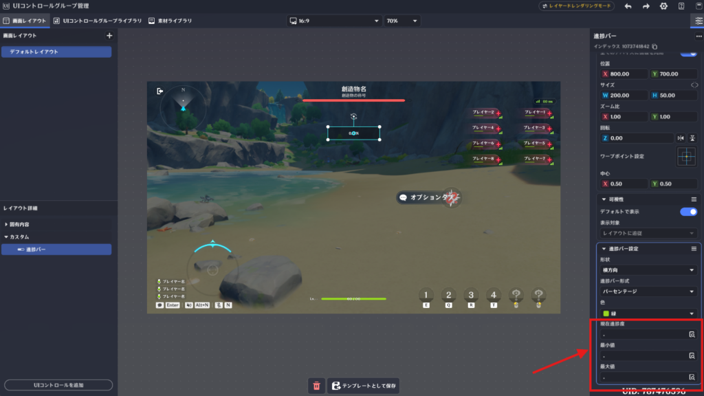
先ほど追加した項目を進捗バーとして機能させるにはもう少し設定が必要です。
右の詳細画面の「進捗バー設定」の中に「現在進捗度」「最小値」「最大値」の3つの空の項目があります。
ここを設定することで動くようになります。
例えば、最小値が0、最大値が100として、現在進捗度が50なら、この進捗バーが50%と表示されます。
しかし、この項目には直接数値を設定することができません。
虫眼鏡マークをクリックしてみましょう。
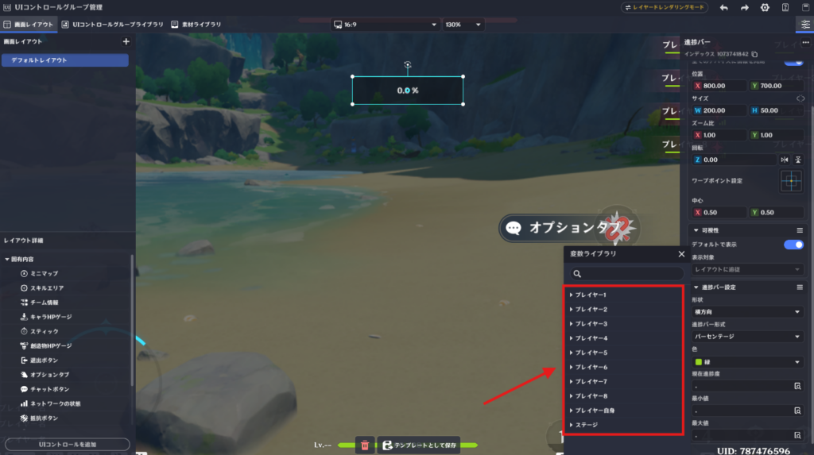
「変数ライブラリ」という子画面が開きました。
虫眼鏡マークを押して、この画面が開くということは、進捗バーのこれらの項目には「変数」を設定する必要があるということですね。
「変数」は、値を入れておくための箱のようなものです。
プレイヤーやキャラクター、ステージやオブジェクトなど様々なエンティティにこの箱を持たせることができます。
そして箱は1つだけでなく、名前が違えば複数設定することができます。
エンティティ自体が消えたり、変数を上書きしたりしない限りは、入れた値はずっと保存されています。
そのため、データの保存に対して非常に大きな働きをしています。
早速、変数を作っていきましょう。
「変数」は先ほど言った通り、様々なエンティティに対して持たせることはできますが、
UI表示に使える「変数」は、プレイヤーエンティティとステージエンティティのみになります。
なので、UI表示させる必要のある変数については、どちらかに持たせるようにしましょう。
今回は、チュートリアルに合わせてプレイヤーエンティティの方につけます。
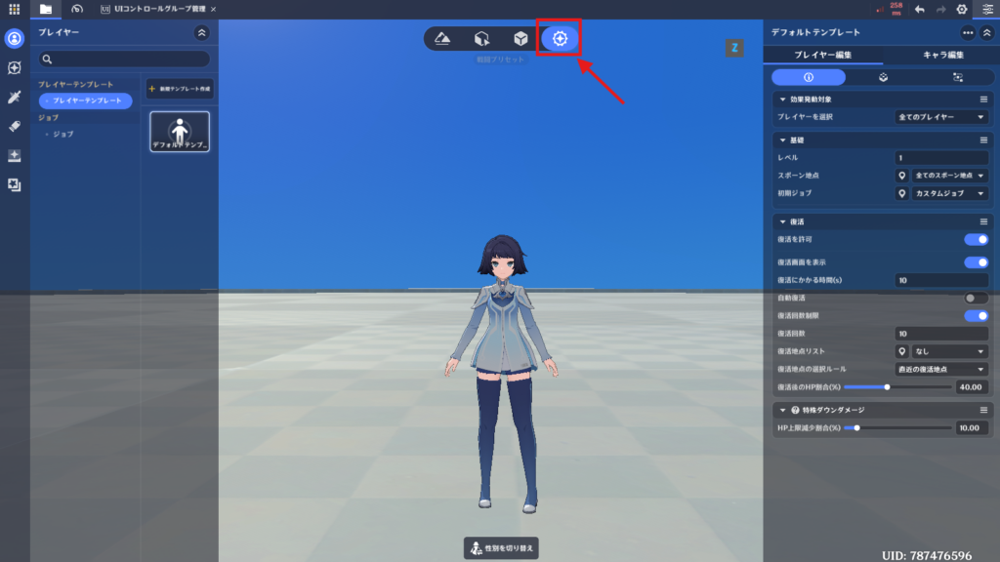
ゲーム内エディタの上部にある一番右のタブをクリックします。
プレイヤーに対する変数の設定は、この「戦闘プリセット」画面で行います。
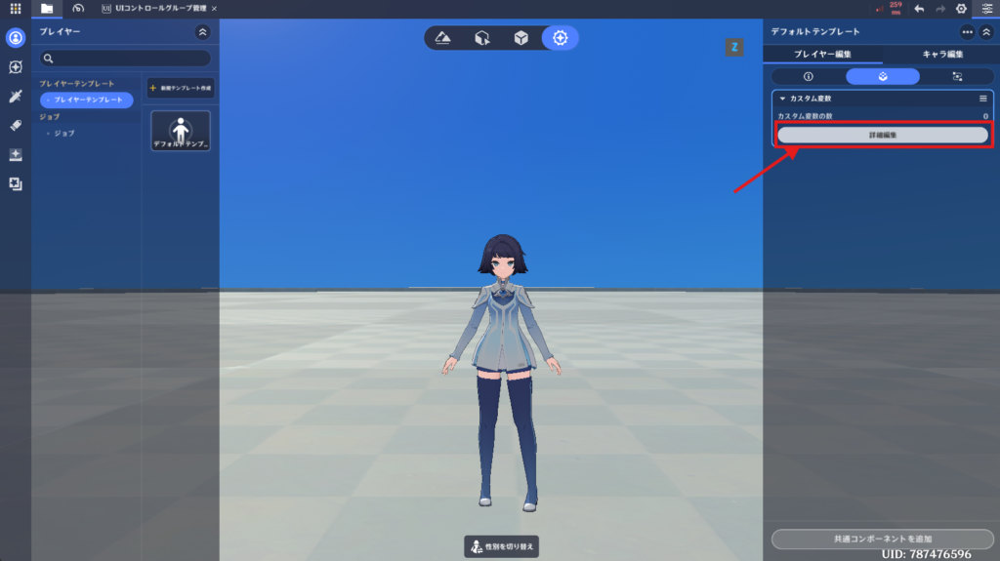
詳細画面のプレイヤー編集の真ん中のタブをクリックします。
今回は、この「カスタム変数」と呼ばれる変数を使用します。
衝突トリガーの時のように共通コンポーネントの追加が必要ですが、デフォルトでついているので今回は新たに追加は行いません。
詳細編集ボタンをクリックします。
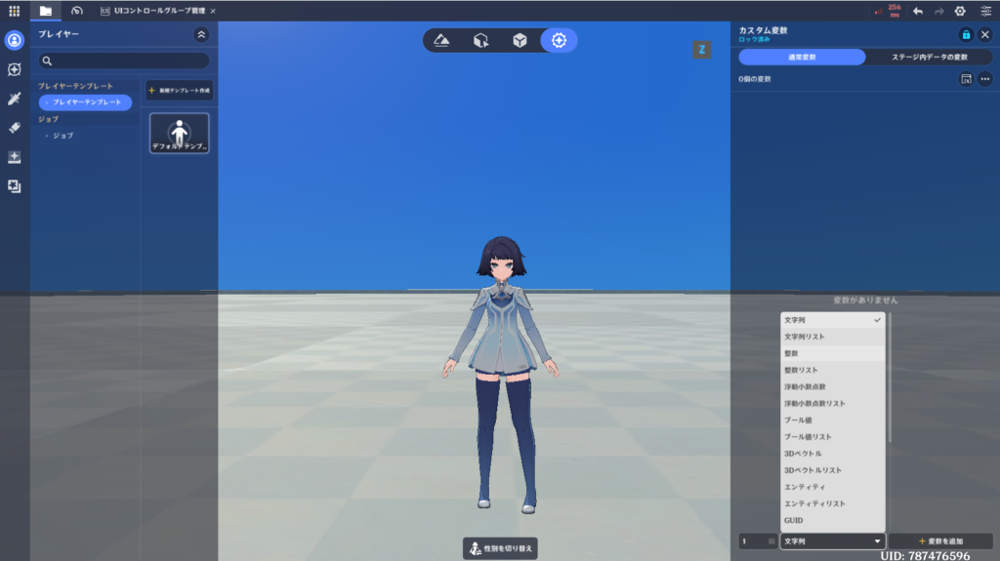
変数は、値を保存しておくための箱ではありますが、なんでもかんでも保存しておけるわけではありません。
必ず箱には値の種類を決めておく必要があります。
整数と決められた箱には、文字列を保存することができないんですね。
それでは詳細画面の下にある、下矢印をクリックして表示されたリストから「整数」を選択しましょう。
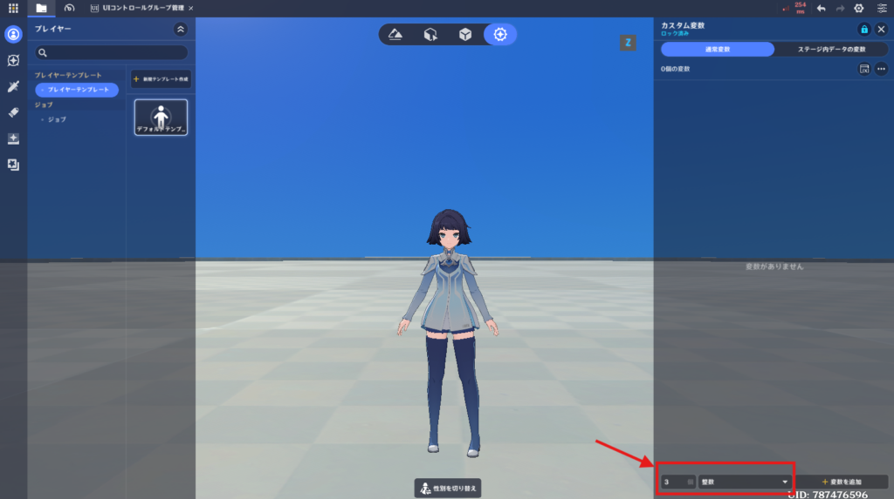
そして、今回は「現在進捗度」「最小値」「最大値」と3つ必要なので、3個に変更して、「変数を追加」ボタンをクリックします。
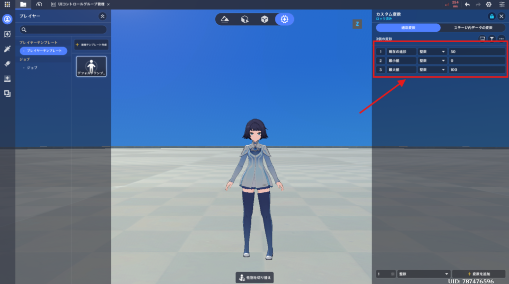
追加された変数に変更を加えましょう。
名前をわかりやすいように変更して、初期値の0になっている部分を「最大値」は100、「現在の進捗」は50に変更します。
そして作った変数を先ほどの進捗バーの空になっている項目にセットしましょう。
変数ライブラリの「プレイヤー自身」の中に作られているので、項目に対応したものを設定しましょう。
ここまでできたらテストプレイをしてみましょう。
こんな風に画面に進捗バーが50%で表示されていたらOKです。
次はこの進捗バーをコインに触れたときに20%増えるようにしていきましょう。
コインを消すときと同じで、20%増える処理をノードグラフで作る必要があります。
「3.キャラクターが触れたコインを消す」でコインに触れたらコインを消すノードグラフを作成しました。
トリガーとなる条件は同じなので、ここで作ったノードグラフに処理を追加しましょう。
「コインに触れたらコインを消す」のノードグラフを開き、右クリックをしてノードライブラリを開きます。
カスタム変数の中にある「カスタム変数を設定」をクリックします。
変数名に「現在の進捗」とつけ、どの変数を設定するのか明確にするようにします。
ターゲットエンティティは、この変数を持っているエンティティのことです。
先ほど、プレイヤーにこの変数を持たせたため、プレイヤーエンティティと繋ぐ必要があります。
トリガーエンティティがコインなら、加入者エンティティがプレイヤーなんじゃない？と思いますが、実は違います。
原神を2人でマルチプレイする時、1Pがキャラクターを2名、2Pがキャラクターを2名操作しますよね。
星々の幻境では、操作している私たちをプレイヤーエンティティと呼び、プレイヤーが指示して動いているキャラクターを、キャラクターエンティティと呼んでいます。
コインに触れるのも実際には私たちではなく、私たちが操作しているキャラクターですよね。
プレイヤーエンティティはキャラクターエンティティの親みたいなものです。
そのため、このまま加入者エンティティとターゲットエンティティを接続することはできません。
右クリックをして、青で分けられている「検索ノード」の「キャラクターに紐づいたプレイヤーエンティティを取得」をクリックします。
このノードを使うことで、そのキャラクターを動かしているプレイヤーの情報を取得できるようになります。
加入者エンティティとターゲットエンティティの間に挟む形で接続できました。
「カスタム変数を設定」の「変数値」の歯車マークを押して、変数の種類を合わせます。
カスタム変数を作る時に整数で作ったので、ここでは整数をクリックします。
入力できるようになったので、ここで「20」と入力します。
そしてこのノードを「エンティティを破棄」の前に実行できるように接続します。
「エンティティを破棄」でこのノードグラフがついているコインが消えてしまうため、それ以降の処理が動かなくなってしまうためです。
ここまで出来たら忘れずにノードグラフを保存しましょう。
原神ゲーム内エディタの方に戻り、先ほど現在の進捗を50にしていたところを0に変更して、テストプレイしてみてください。
コインに触れたときにコインが消えて、進捗バーが20%になると思います。
🌸コインを5枚獲得したとき、ゲームを完了させる
もちろん、ここまでやってきたことを5回繰り返せば5枚のコインはできます。
しかし、それでは手間がかかってとても大変です。
ここまで頑張って作ってきたコインをテンプレートとして保存することができます。
テンプレートから呼び出してコインを量産しましょう。
コインを右クリックして「プレハブとして保存」をクリックします。
OKボタンをクリックします。
左のカスタムの中にある「オブジェクト」の未分類タブに「冒険コイン」が追加されました。
このコインをあと4枚配置してみましょう。
ここから呼び出した冒険コインは、配置した時点でくるくる回っていますし、ノードグラフもついていると思います。
この5枚のコインは同じテンプレートを使用しています。
テンプレートに修正が入ると、そのテンプレートで呼び出されたコインにも影響を及ぼします。
例えば、5枚あるうちの1枚のコインの「プリセットステータス」を0に変更して動きを止めてみます。
コインを右クリックして、「プレハブを上書き保存」をクリックします。
そしてそのまま、「変更する」をクリックすると5枚すべてのコインの動きが止まります。
再度、プリセットステータスを1に変更して、「プレハブを上書き保存」をすると5枚のコインが回りだします。
このように同じテンプレートを参照しているエンティティは、「プレハブを上書き保存」したときに自動でテンプレートに合わせて更新されます。
次に、5枚のコインを集めると進捗バーが100%になり、ゲームを完了させる処理を作っていきます。
まず、何がトリガーになるのか考えてみましょう。
・コインに触れる→進捗バーが20%になる
・コインに触れる→コインが消える
・進捗バーが100%になる→ゲームが完了する ※New
これが次に作るノードグラフの内容になりますね。
しかし、その前に1点修正する必要がある箇所があります。
前段で作った進捗バーが20%になる処理ですね。
今のままだと、コインを何枚取ろうと20%のままです。
これを、「現在の進捗＝現在の進捗＋20%」という形に変更する必要があります。
右クリックをして、検索ノードから「カスタム変数を取得」のノードをクリックします。
変数名に「現在の進捗」を設定し、ターゲットエンティティにプレイヤーエンティティを接続します。
これでプレイヤーが保存している「現在の進捗」の値を持ってくることができます。
そして、右クリックをして、「運算ノード」から数学を開き、「足し算」ノードをクリックします。
取得した「現在の進捗」に20を足して、「現在の進捗」に再度設定します。
これでコインを獲得すると20%加算されていき、最終的に5枚獲得すると100%になるようになります。
それでは、進捗バーが100%、つまり「現在の進捗」が100になった時の処理を作っていきます。
新しいノードグラフを作成します。
ノードグラフを開始するには、イベントノードが必要なので、「イベントノード」の中から「カスタム変数が変化した時」というノードを選択します。
「カスタム変数」には、データの保存をしておく以外にも、その内容が更新されたときにノードグラフに通知を送る機能もついています。
0→20、20→40、40→60に変化していくときも毎回通知していたわけですね。
それをこのイベントノードでキャッチします。
5枚のコインを獲得するまでに、計5回の通知を受け取ることになります。
そのため、現在進捗が100になった時だけ完了処理を動かすようにします。
右クリックをして、ノードライブラリを開いて、共通の「ダブルブランチ」をクリックします。
これは接続した条件がYesかNoによって、その先の処理を分岐させるノードです。
分岐条件をつけます。
右クリックをして、再度ノードライブラリを開いて、運算ノードの「等しいかどうか」をクリックします。
「カスタム変数が変化した時」の「変化後の値」と「等しいかどうか」の「入力1」を接続します。
「等しいかどうか」の「入力2」には、100を設定します。
これで「変化後の値が100かどうか」の判定条件になります。
結果を「ダブルブランチ」の条件に接続することで、100のときは「はい」から先の処理に流れ、100以外のときは「いいえ」から先の処理に流れるようになります。
このままでも今回の処理であれば動きますが、意識付けのためにもう一つ条件を追加します。
先ほどと同じように、「ダブルブランチ」と「等しいかどうか」のノードを準備します。
「等しいかどうか」の「入力1」は「カスタム変数が変化した時」の「変数名」に接続します。
そして「入力1」には、「現在の進捗」を設定します。
これで、「現在の進捗」という変数が変化した時のみ、その先の「変化後の値が100かどうか」のチェックをするようになります。
意図しない変数で処理が実行されないように、制御する必要があるんですね。
それでは、すべての条件を満たしたその先に、「ゲームを完了させる」処理を追加します。
右クリックをしてノードライブラリを開き、実行ノードの中にあるステージ集計を開いて、「プレイヤーの集計終了状態を設定」をクリックします。
「集計状態」から「勝利」を設定します。
そして、プレイヤーエンティティを「カスタム変数が変化した時」の「イベント元エンティティ」に接続します。
イベント元エンティティは、このノードグラフが紐づけられているエンティティのことです。
今は、まだこのノードグラフを紐づけていませんが、後からプレイヤーエンティティに紐づけれるので、
ここではプレイヤーエンティティとイベント元エンティティを接続するようにします。
そして、ダブルブランチの「はい」から線を伸ばして、「プレイヤーの集計終了状態を設定」の左側のピンに繋ぎます。
次に右クリックでノードライブラリを開き、実行ノードのステージ関連から「ステージ終了」のノードをクリックします。
このノードは、ゲームを完了させるノードになります。
ノード同士を繋げて、保存をしたらノードグラフの完成です。
作成したノードグラフは必ずエンティティに紐づけましょう。
原神ゲーム内エディタの方に戻り、プレイヤー編集の一番右のタブをクリックします。
「ノードグラフを追加」をクリックします。
先ほど作ったノードグラフを選択します。
紐づけ完了しました。
それではテストプレイをしてみましょう。
今回のテストでは、「テストプレイ集計を有効」を必ずオンにするようにしてください。
こちらをオンにしないと「勝利」の文字が表示されなくなります。
⭐幻境コンポーネントクイズに挑戦する
まだクリエイターセンターの「幻境コンポーネントクイズ」をクリアしていない方はこの段階で挑戦してみましょう。
答えがわからないときは、この記事に赤いマーカーで塗った部分を確認してみてくださいね。